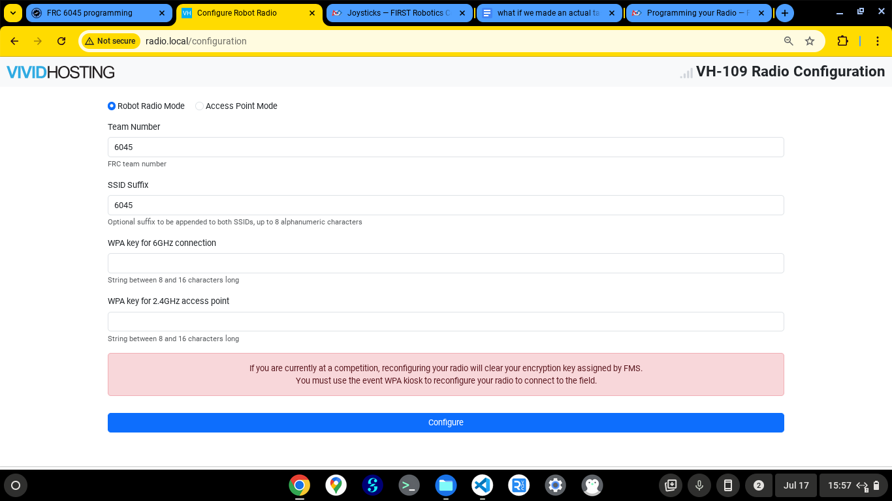

Home / How-To Guides / Configure a Radio
How to Configure a Radio
Turn on the robot.
Connect the robot to a computer via Ethernet cable and turn off the computer's Wi-Fi.
Go to the web address http://radio.local.

Select the "Robot Radio Mode" option. Type the applicable information into each box.
Once configured, the radio will appear on devices that can connect to it as "FRC-####-suffix", where "####" is the team number and "suffix" is the suffix.
The password will be what is entered into the bottom two boxes, depending on what is connected to the radio.
In the case of FRC 6045, the team number is 6045. The suffix is "realest" for the normal radio and "backup" (and "backup2", "backup3", etc.) for backup radios. Both WPA keys are 60456045.
Select "Configure" to configure the radio.
For more information, see WPILib's Programming your Radio page.